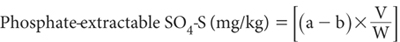
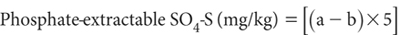
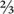

Sulfur (S) is an essential plant nutrient distributed heterogeneously throughout the earth’s crust and soils. The element and its compounds exhibit five different oxidation states, including four in geological environments and as S6 in gases and sulfates (Ure and Berrow 1982). Total S concentrations range widely from 3 to over 10 000 mg S/kg, with a mean around 430 mg S/kg. Pyrite (FeS2) and pyrrhotite (FenSn+1) are common sulfide minerals, and many of the metals of economic importance occur as sulfides (Ure and Berrow 1982).
Many different forms of organic and inorganic fractions of S occur in soils and in soil OM (Williams 1975). In general, organic S fractions are highly correlated with TOC and TSN. The C/N/organic-S ratio of soils is commonly around 140:10:1.3 (Probert and Samosir 1983). Long-term studies on cultivated soils, however, have shown a decline in organic S levels of 50% in 20–30 years (Kamprath and Till 1983).
In aerobic soils of humid regions, most S is in the organic fraction. As with N, this organically bound S must be mineralised before it becomes available to plants, predominantly as sulfate (SO42–). There are important exceptions, however. For example, sulfides (S2–) predominate in acid-sulfate soils (see Chapter 20), in recent marine deposits, and in many mining-waste dumps, while elemental S can exist in and around areas of recent volcanic activity and associated soils. Inorganic, solid-phase S (notably gypsum; CaSO4.2H2O) is very common at the wetting front of soil profiles in semi-arid and arid regions of inland northern Australia (Rayment et al. 1983).
The reactive surfaces of highly weathered clays and the surfaces of Fe and Al oxides and hydroxides can adsorb relatively large amounts of SO42–, but this propensity decreases as phosphate concentrations increase and as soils become less acidic (Kamprath and Till 1983). Sulfate ions can displace NO3– and Cl– from anion exchange surfaces when present at similar soil solution activities. The chemical activity of SO42– in soil solutions allows the formation of ionic species such as CaSO40 and AlSO41+ (Adams 1974).
The focus of this chapter is on the chemical measurement of soil S, particularly as a plant nutrient. For interpretative information, refer to Lewis (1999).
Measurements of total S are undertaken to assess the size of the soil S pool. Concentrations >0.5% S and certainly >1.0% S also warn of the likely presence of potential or actual ASS (see Chapter 20). In general, total S is poorly correlated with plant response to applied S fertiliser, except when soil S reserves are very low. Total S is also a poor indicator of a soil’s tendency to corrode concrete, except at concentrations of ≥1% S, particularly under oxidising conditions.
Two methods for total soil S are included. The first is based on X-ray fluorescence with dry-powder pellets. The second is a combustion furnace method, similar to equivalent procedures for TOC and TSN. Both require sophisticated laboratory instrumentation available from several manufacturers.
Wet digestion methods with mineral acids are available but may not always yield quantitative results, because of the possibility of S loss during digestion. If this option is necessary, methods in which oxidation occurs under alkaline conditions are preferred. See wet-digestion methods provided in Chapter 17, in addition to the suggestions of Randall and Sakai (1983).
The quantity of water-soluble and adsorbed SO42– in the root-zone of soils has a major influence on the incidence of S deficiencies in agriculture (Ensminger 1954; Fox et al. 1964). Water-soluble SO42–, especially when associated with Na+ and Mg2+, also promote attack on concrete and other materials containing concrete, whether in the subsurface or at the surface. Gypsum is much less corrosive, unless groundwater in its proximity is continually replenished (Head 1980).
Several extractants have been used to measure ‘plant-available’ soil S (e.g. Fox et al. 1964; Peverill and Briner 1974; Andrew 1975; Barrow 1975; Lee et al. 1981; Randall and Sakai 1983). These dominantly contain H2PO4 ions but also include Cl- and HCO3- (Blair et al. 1991). Carrier cations vary. Calcium is preferred by most, because it helps to flocculate colloids, resulting in clearer extracts and less difficulty in interpreting the nature of the extracted S (Randall and Sakai 1983). Spencer (1979) proposed the use of 0.04M magnesium phosphate at pH 5.0 at a 1:20 soil/solution ratio with extraction for 2 h, mainly to improve the extraction of SO42– from highly weathered Australian soils of high SO42– sorption capacity.
Blair et al. (1991) found that 40°C soil extraction with 0.25 M potassium chloride (KCl) at a soil/solution ratio of 1:6.67 for 3 h (KCl-40) favours the removal of SO42– and labile forms of organic S, which they found attractive from a diagnostic soil-testing viewpoint. There are mixed views as to whether there is need to include decontaminated active charcoal in extracting solutions of 0.01 M calcium dihydrogen phosphate [Ca(H2PO4)2·H2O], also referred to as MCP.
The chapter includes three principal methods for soil-extractable S (dominantly sulfate), two based on 0.01 M Ca(H2PO4)2, one with and the other without active charcoal. The third method is that of Blair et al. (1991), involving KCl-40. Several analytical options for the measurement of SO4-S are offered, including manual and automated distillation procedures based on Johnson and Nishita (1952). The others are ICPAES and IC.
The Mehlich 3 multi-element extraction, followed by analysis by ICPAES (Method 18F1) extends the options available for extractable S. The test correlates strongly with Method 10B3 (D Lyons, unpublished data).
Soil samples for S, irrespective of test, are best kept at ≤4°C during transport to the laboratory, where they are usually dried, ground, sieved and stored before analysis. These processes enable soils to be analysed for a wide range of elements in addition to S.
There is evidence (Rayment 1993) that levels of phosphate-extractable S in air-dry soils are affected by storage conditions. For example, concentrations increased in storage for about 13 weeks then decreased slightly over the following 20 weeks to levels 2.5 to 3 times higher than those present immediately following air drying (Spencer 1974). Unpublished data (GE Rayment and GA Barry) for phosphate-extractable S in soils from established pastures in south-east Queensland confirm that increases do occur, particularly in surface soils with good reserves of OC. Low temperature storage (3°C) did not prevent changes occurring in apparent soil S status (Spencer 1974). Clearly, there is a need for caution when using stored samples for soil test calibrations and other purposes.
Table 10.1. Summary detaÕs of method codes, method titles, technologies and notes on soÕ S tests described in this chapter, excluding codes for sub-chapter preambles.
Code |
Technology |
Test method |
Notes |
10A1 |
X-ray fluorescence with dry-powder pellets. |
Total soil S. |
Reasonable estimate of total S, with the possible exception of soils high in pyrite. Method 17A1 provides a multi-element option. |
10A2 |
High-temperature combustion. |
|
Good estimate of total S. |
10B1 |
Empirical extraction (MCP) followed by manual distillation. |
Calcium phosphate-extractable S. |
High reliability for all soluble S in extracts, but uses expensive reagents. |
10B2 |
Empirical extraction (MCP) followed by automated distillation. |
|
|
10B3 |
Empirical extraction (MCP) followed by measurement by ICPAES. |
|
Good estimate of soluble S in extracts across all soils; see Figure 10.1. |
10B4 |
Empirical extraction (MCP) followed by measurement by IC. |
|
Good estimate of SO4-S in extracts across all soils. |
10C1 |
Empirical extraction (MCP) including activated charcoal followed by measurement by ICPAES (CPC-S). |
Calcium phosphate-charcoal-extractable S. |
Good estimate of soluble S in extracts across all soils but can be affected by the quality of charcoal used. |
10D1 |
Empirical extraction at 40°C followed by measurement by ICPAES. |
KCl-40-extractable S. |
Good estimate of soluble S in KCl-40 extracts across all soils; see Figure 10.5. |
Table 10.1 has summary details on the methods included in this chapter for measuring total soil S and extractable soil S. More details on each of these are covered in method preambles. Examples of laboratory measurement performance, where available, are summarised in Appendix 2.
This X-ray fluorescence method is based on techniques similar to those described for total P (Method 9A1). There are no recent inter-laboratory proficiency data from ASPAC for this test. According to Vempati et al. (1996), quantitative analysis by XRF could have uncertainty of 10% relative to the measured value: see Appendix 2. Note that Method 17A1 provides an alternative multi-elemental XRF option that uses modern instrumentation. Both total S and total P could be included in the multi-element suite.
Table 10.2. Quantities and volumes required for preparatŠn of pellets of known S content.
Wt of sÕica (g) |
Gypsum (g) |
Vol. of S standards (mL) |
Equivalent soÕ concentratŠn (%S) |
3.6574 |
1.3425 |
– |
5.0 |
4.3287 |
0.6713 |
– |
2.5 |
4.7315 |
0.2685 |
– |
1.0 |
4.8657 |
0.1343 |
– |
0.5 |
4.9329 |
0.0671 |
– |
0.25 |
4.9732 |
0.0268 |
– |
0.1 |
High strength |
|||
4.9588 |
– |
0.5 |
0.2 |
4.9691 |
– |
0.375 |
0.15 |
4.9794 |
– |
0.25 |
0.10 |
4.9897 |
– |
0.125 |
0.05 |
Low strength |
|||
4.9948 |
– |
0.125 |
0.025 |
4.9979 |
– |
0.050 |
0.01 |
Boric Acid
As for Method 9A1.
Silica
As for Method 9A1.
Sulfur Standard - High Strength
1 mL contains 20 mg of S.
Dissolve 8.2430 g ammonium sulfate [(NH4)2SO4; previously dried at 105°C for 4 h] in deionised water and dilute to 100 mL in a volumetric flask.
Sulfur Standard – Low Strength
1 mL contains 10 mg of S.
Prepare by diluting 50 mL of S Standard – High Strength to 100 mL using deionised water and a 100 mL volumetric flask.
Gypsum
Analytical-grade CaSO4.2H2O.
Prepare solid standards of known S content by adding gypsum or volumes of either High or Low S Standard to weighed quantities of silica, as detailed in Table 10.2. See Method 9A1 for more details of the preparation technique. These standard pellets have an extended life.
Proceed in a manner similar to that described in Method 9A1: see Note 1.
Follow the XRF manufacturer’s recommendations to set up and operate the instrument. This will typically be a sequential/simultaneous XRF spectrometer, probably with fixed channel monochromators optimised for total S. When feasible, make the net count (i.e. peak-background) equal to the concentration of the standard pellet (or related to it by some power of 10), so that elemental concentration may be recorded directly from the display.
Report total S (%): an oven-dry basis can be assumed.
1. Soil sample residues in the grinding head of the ‘shatterbox’ can be a serious source of contamination, especially when components become worn. For routine applications, these residues can be overcome between samples by scrubbing and washing with water then drying. Alternatively, the residues can be minimised by grinding a small quantity of acid-washed silica sand between each unknown sample.
Total soil S, inclusive of sulfate and sulfide, can be determined by catalysed, high temperature combustion, simultaneously with measurement of TOC and TSN. This method is based on the detection of S, after the combustion of the sample in a stream of O2, with the S released and converted to sulfur dioxide (SO2). The use of vanadium pentoxide (V2O5) as an accelerant ensures the decomposition and release of inorganic S into the gas stream. The method is both rapid and convenient but does require reliable instrumentation, now available from a range of manufacturers.
From a workplace health and safety perspective, laboratories that employ O2-enriched, high temperature combustion methods must take precautions to prevent burns and fires, and also while handling compressed gases. As O2 is highly inflammable, avoid open flames and sparks and have a fire blanket and an appropriate fire extinguisher close to hand.
The method described (as an example) is based on use of a LECO™ CNS-2000 multi-functional analyser. A sample is weighed and accelerant added before being ignited in a stream of O2 gas at 1350°C. Water vapour is removed and the combustion gases are collected and equilibrated. The amount of S released is measured quantitatively (as SO2) using IR detection. The instrument is calibrated against a reference standard (in this case sulfamethazine), with the total S reported as % S. No local measurement performance data are available.
Sulfamethazine (2-4-aminobenzenesulfonylamino-4:6-dimethylpyrimidine; C12H14N4O2S)
Calibration standard, LECO Part No. 502–298. Pure dry sulfamethazine contains 51.78% C, 20.13% N and 11.52% S.
Vanadium Pentoxide Accelerant
LECO Part No. 501–636.
Anhydrone (a.k.a. – Magnesium Perchlorate)
LECO Part No. 501–171.
Lecosorb
LECO Part No. 502–174.
Compressed Oxygen
Industrial grade >99.5% purity.
Compressed Helium
Ultra High Purity >99.99% BOC Part No. 220.
Compressed Air
Medical grade, filtered to be free of oil and water.
Combustion Boats
LECO Part No. 528–203
Instrument Preparation
Turn on and log onto the total S, high-temperature combustion analyser, and select the relevant total S method to initiate recommended operating parameters. The furnace will also commence heating to its operating temperature.
While the furnace is heating up, clean and repack the Anhydrone tube at the base of the furnace, then from the instrument’s Front Panel, reset the Anhydrone counter to zero and save changes.
After checking all gas connections and confirming there is sufficient carrier gases, turn on each of the required gases, including back-flow valves. Check the gas regulators and set/check gas flow rates.
To check that the furnace has reached operating temperature, go to the MAINTENANCE page and access the AMBIENT MONITOR. (Accessing the AMBIENT MONITOR will also turn on the instrument gas flow, if this has not been done). Observe the status of the other parameters listed. A tick indicates that the value shown is within the accepted range.
From MAINTENANCE, access the DIAGNOSTICS page and perform leak checks on the Helium, Ballast and Combustion systems by selecting each icon in turn. When all have passed, then the LECO CNS-2000 is ready to start analysis.
Calibration and Analysis
Follow manufacturer’s instructions to calibrate the analyser and to prepare it for total S analysis. Instrument calibration involves analysing the one standard (sulfamethazine) many times at varying weights, using each result to calculate the best-fit curve and store in memory. The calibration (graph/curve) should not change but the standard values obtained in any set of analysis may drift from the certified value. Once a trend is confirmed, a Drift Correction can be made and, if needed, previous samples recalculated: see Note 1.
Routinely for a 0.2 g soil sample, allocate ‘blanks’ to a nominated weight of 0.2 g. (When the Blank ID is selected, press Manual Weight, type in 0.200 and then hit enter. Don’t use a boat or V2O5 for blanks but remember to leave a space in the Autoloader rack.)
Weigh (typically) 0.2 g finely-ground (<0.5 mm) of air-dry (40°C) soil into a combustion boat then combine with two standard scoops (≈1.0 g) of V2O5 as an accelerant, taking care not to create any dust, then place in the Autoloader rack for analysis. Repeat for remaining soil samples.
Analyse 3 blanks to warm up the system and to check the IR cell baseline voltage (peak value), then analyse 5 standards (Sulfamethazine: ≈0.05 g) to establish and check the existing calibration. After analysing the fifth standard, run another 2 blanks.
Commence analysing soil samples when all instrument operating parameters are within specifications. As a further check on analytical performance, analyse one sample in duplicate for each batch of 12 to 15 samples. In addition, analyse 3 calibration standards followed by 2 blanks between each batch of unknowns, and at the end of each batch.
Note that when each analysis is complete, the result is momentarily displayed on the instrument’s screen and the data printed out. The Autoloader then removes the finished sample from the furnace, loads up the next sample and begins the analysis sequence again. The LECO™ CNS-2000 will continue to analyse samples without further prompting, so long as there are weights present in the Weight Stack and the sample in the 49th position has not been analysed.
Once the sample in the 49th position has been analysed, that sample boat is removed from the furnace and all further analysis is halted. The operator must touch Analyse to recommence the analysis process. At run’s end, turn all the gases off at the bench top, cylinder and back-flow valves. Empty the boat bucket under the Autoloader with care, as it may still be HOT.
Report total S (%) on an oven-dry basis. Apply an air-dry moisture to oven-dry moisture conversion (Method 2A1).
1. If samples have been analysed between the standards used for the drift correction, then the values for these can be recalculated by selecting the RECALCULATE RESULTS icon. In the same manner as done for the standards, choose the element(s) for correction and then highlight each sample that needs re-calculation. Press Process Results Key when done and save changes.
Two different methods utilise 0.01 M Ca(H2PO4)2 as the extractant for soil S, one with and the other without activated charcoal. The method with charcoal (10C1) with the acronym (CPC-S) is used predominantly in Victoria, where it has been correlated with responses of local pastures to applications of S fertiliser (Peverill and Briner 1974). The other, with analytical finishes coded as Methods 10B1, 10B2 and 10B3 in Rayment and Higginson (1992) and similarly in this chapter has been more widely adopted (e.g. Rayment 1983, 1984). There is also an IC option (Method 10B4). Moreover, measurement performance for over a decade, particularly for Method 10B3 (see Figure 10.1), is available from ASPAC interlaboratory proficiency programs, such as those reported by Peverill and Johnstone (1997) and Lyons et al. (2008).
Manual distillation (Johnson and Nishita 1952) and automated distillation are analytical options but are relatively slow and expensive to perform. ICPAES is the preferred analytical finish, because of its analytical convenience, wide dynamic range, and speed of measurement. It includes all forms of S in solution. The IC alternative is restricted only to soluble SO4-S.
Sulfate S is extracted in the absence of activated charcoal from air-dry soil of <2 mm particle size by 0.01 M Ca(H2PO4)2 at pH 4.0 (Fox et al. 1964; Barrow 1967; Beaton et al. 1968) using a soil/solution ratio of 1:5 and an extraction time of 17 h at 25°C. This extracting solution contains sufficient phosphate ions to displace adsorbed S from all but very strongly sorbing soils (Barrow 1967).
Figure 10.1. Soil-extractable sulfate-S concentrations (Method 10B3; ICPAES) vs robust % CVs (1997–2007) derived from ASPAC soil inter-laboratory proficiency programs. Two samples with concentrations >2000 mg S/kg are not shown but are included in the continuous trend line.
The extracted S is then determined in an aliquot of particle-free soil extract by the method of Johnson and Nishita (1952). Sulfate ions are reduced to hydrogen sulfide (H2S) and the evolved gas absorbed in a solution of Zn2+ and sodium acetate (CH3COONa). The sulfide anion is then allowed to react with p-aminodimethylaniline sulfate and H+ to form methylene blue (reduced form) in the presence of Fe3+, permitting the colorimetric measurement of phosphate-extractable S.
Extracting Solution – 0.01 M Ca(H2 PO4)2 at pH 4.0
To prepare 50 L of extracting solution:
(a) Calcine approximately 50 g calcium carbonate (CaCO3) by placing a sufficient quantity into a furnace at 800°C. Raise temperature to 1000°C and maintain temperature for 45 min. Cool in a desiccant-free desiccator then add 60 g calcined calcium carbonate (CaO) to 30 L deionised water, stopper, shake well, and allow the Ca(OH)2 solution formed to stand overnight.
(b) Weigh 116.82 g phosphoric acid (H3PO4) and transfer to a container holding not more than 15 L deionised water.
(c) Add ≈22 L of suspension-free Ca(OH)2 solution (a) in 2 L aliquots with constant stirring to the dilute H3PO4 solution (b). Adjust pH to 4.0 with either dilute H3PO4 or Ca(OH)2 solution. Make to volume with deionised water: see Note 1.
Reducing Agent
Mix together in a suitable 2 L refluxing flask:
600 mL 55% (w/v) hydriodic acid (HI)
150 mL sg. 1.13 hypophosphorous acid (H3PO2)
300 mL 90% (v/v) formic acid (HCOOH)
Boil carefully below 117°C under reflux in a fume cupboard with a stream of N2 gas bubbling throughout the solution. Continue boiling for about 10 min after the solution has cleared. (If boiled above 117°C, highly poisonous phosphine gas (PH3) may form.)
When cool, disconnect N2 and transfer the reducing agent to a dark storage bottle. If protected from light and atmosphere, the reagent remains stable for 1–2 months. Used reducing agent may be regenerated in a similar way up to a total of three times, provided its NO3-N content remains low.
Absorbing Solution
Dissolve 50.0 g zinc acetate dihydrate [(CH3COO)2 Zn.2H2O] and 12.5 g sodium acetate trihydrate (CH3COONa.3H2O) in deionised water and make to 1 L. Filter (Whatman No. 42 paper) before use.
Aminodimethylanaline Solution
Dissolve 1.0 g N, N-dimethyl-p-phenylenediamine sulfate [NH2C6H4N(CH3)2]2.H2SO4 in 70 mL deionised water. Add carefully 200 mL 18 M H2SO4 in small portions, cooling and mixing between additions. Cool and make to 1 L in a volumetric flask. Avoid free base formation during preparation, as this chemical is a mild vesicant (blisters or burns body tissues by contact with skin or following inhalation).
Ferric Iron Solution
To 125.0 g ferric ammonium sulfate [FeNH4(SO4)2.12H2O] add 25 mL 18 M H2SO4 and 975 mL deionised water. Invert several times to dissolve.
Gas Washing Solution
Dissolve 10.0 g sodium dihydrogen orthophosphate (NaH2PO4.2H2O) and 10.0 g pyrogallol [C6H3(OH)3] in 100 mL deionised water with the aid of a stream of N2 gas bubbling through the solution. Keep well sealed prior to use. Make fresh weekly or when solution in the gas washing column is highly discoloured.
Sulfate Primary Standard
1 mL contains 1 mg of S.
Dissolve 5.4353 g potassium sulfate (K2SO4; previously dried at 105°C for 4 h) in deionised water and make to 1 L in a volumetric flask. Add 2 drops chloroform (CHCl3) to suppress biological activity and store solution in borosilicate glass, preferably in dark.
Sulfate Secondary Standard
1 mL contains 100 μg of S.
Take 50 mL SO4-S Primary Standard and dilute to 500 mL with 0.01 M Ca(H2PO4)2 at pH 4.0 Extracting Solution. Retain after preparing working standards and use the excess to ‘condition’ the Johnson and Nishita apparatus.
Sulfate Working Standards
Prepare by adding 0, 2.5, 5.0, 10.0, 20.0, 30.0, 40.0 and 50.0 mL of freshly prepared SO4-S Secondary Standard to separate 500 mL volumetric flasks. When diluted to 500 mL with Extracting Solution these working standards contain 0, 0.5, 1.0, 2.0, 4.0, 6.0, 8.0 and 10.0 mg S/L. Equivalent soil strengths for a 1:5 soil/solution ratio are 0, 2.5, 5.0, 10.0, 20.0, 30.0, 40.0 and 50.0 mg S/kg, respectively.
The apparatus shown in Figure 10.2 is based on Johnson and Nishita (1952). A gas delivery tube is connected to the U tube of the gas washing column by a short piece of plastic tubing. The delivery end of the gas delivery tube is tapered, allowing it to reach the bottom of a 100 mL volumetric flask. Heating is by micro-burner via a suitable gauze. All ground glass joints should be lubricated with S-free ground glass joint lubricant: see Note 2.
Install a gas washing bottle between the N2 cylinder and the apparatus inlet. Replace the Gas Washing Solution weekly or when badly discoloured.
Weigh 20.0 g of air-dry soil (<2 mm) into a 250 mL plastic bottle. Add 100 mL Extracting Solution [0.01 M Ca(H2PO4)2 at pH 4.0], stopper, and shake end-over-end for 17 h at 25°C. Centrifuge at about 3000 rpm for 20 min or filter extracts through Whatman No. 42 paper, discarding the first portion.
Clean the Johnson and Nishita apparatus thoroughly with deionised water (detergent washing recommended following periods of storage) and drain. Grease all Quickfit male joints of the apparatus with a minimum of S-free lubricant. Add 10 mL Gas Washing Solution to each column and assemble the apparatus as shown in Figure 10.2 using Quickfit springs where necessary. Turn on condenser water, gas burners and adjust N2 flow rate to ≈150 mL/min (3 to 4 bubbles/sec). Check periodically.
Figure 10.2. Modified Johnson and Nishita apparatus for calcium phosphate-extractable S.
To ensure H2S saturation of the liquid system, condition the apparatus each day by adding initially 0.5 mL SO4-S Secondary Standard to the round-bottom reduction flask. Next add 2 glass beads and 4 mL Reducing Agent and quickly attach the flask to the condenser and heat to boiling within 60 sec. Reduce the heat and allow to reflux for ≥30 min. (A receiving vessel is not required at this stage).
Prepare a series of 100 mL volumetric flasks containing 10 mL of Absorbing Solution and about 70 mL deionised water. When the apparatus has been conditioned, raise one of these volumetric flasks under the gas delivery tube of each apparatus until the outlet almost touches the bottom of the volumetric flask.
Pipette a suitable aliquot of soil extract (or working standard), commonly 5.0 mL, to a reducing flask. Ensure the flask top is lightly greased, add glass beads and, immediately prior to connecting to the apparatus for refluxing, add 4.0 mL Reducing Agent. Quickly connect flask to the condenser with Quickfit spring. Heat to boiling within 60 sec then reduce heat and allow to reflux for 60 min at a low boil. Check the N2 gas flow rate periodically during this period. When S concentrations are low, take a larger aliquot and evaporate to dryness before adding the reducing agent: see Note 3.
Detach the glass delivery tube from the plastic sleeve so that the delivery tube drops gently into the 100 mL flask. Pipette 10 mL aminodimethylanaline solution into the 100 mL flask, stopper and shake, then add 2 mL Ferric Iron Solution, restopper and shake.
Remove the glass delivery tube from the 100 mL flask with a pair of tweezers and rinse clean with deionised water. Make volume to 100 mL with deionised water and shake well. Allow at least 10 min for full colour development: colour remains stable for up to 24 h.
Detach the reducing flask, allow it to cool, then pour the used reducing agent via a grooved funnel (to catch glass beads) into a suitable dark storage bottle for later regeneration.
When fully drained, reattach the gas delivery tube to the apparatus and repeat the operations on equal volumes of the extracting solution, soil extracts, and working standards. When operations for the day are complete, shut-down the apparatus: see Notes 4 and 5.
Read absorbance of both standards and soil extract solutions in the range 660–670 nm on a suitable spectrophotometer.
Plot absorbance of working standards against S concentrations (or use a regression equation) to obtain S concentration of soil extracts. For a 1:5 soil/solution ratio and equal aliquots of soil extracts and standard solutions, S concentrations can be obtained directly. Adjust for any reagent blank.
Report phosphate-extractable S (mg S/kg) on an air-dry basis.
1. The theoretical quantity of saturated Ca(OH)2 solution required for 50 L of 0.01 M Ca(H2PO4)2 extracting solution is 24 L, but this varies with temperature. The solubility of Ca(OH)2 increases with decreasing solution temperature.
2. To remove S from ground-glass joint lubricant, mix ≈5 g grease with 5 mL of both HI and H3PO2 in a 50 mL beaker. Fill a round bottom Kjeldahl flask with cold water and sit it on top of the beaker to act as a condenser. Boil the mixture with frequent stirring for ≈45 min. Pour off the acid and wash the lubricant thoroughly with deionised water.
3. Where large aliquots of soil extracts are necessary (due to low S concentration) the extract solution should be evaporated to dryness prior to the addition of Reducing Agent. Evaporation may be accelerated by drying in an oven at 130°C or by blowing a stream of air, washed in 4 M KOH (224.4 g/L) into the upper part of the flask.
4. Leaving the reducing flask connected to the condenser following the last reflux on the previous day stops impurities entering the apparatus and maintains an inert atmosphere (N2), obviating the need to thoroughly clean the apparatus prior to use.
5. When turning off the apparatus, concurrently turn off the gas at the supply outlet and remove the N2 delivery tube. Next turn off the N2 gas supply. Finally shut off the water supply to the condenser.
6. This manual Johnson and Nishita analytical finish can be readily adapted to measure S in clarified extracts of Method 10C1 and 10D1.
Sulfur is first extracted with 0.01 M Ca(H2PO4)2 at pH 4.0 as described in Method 10B1. The extracted S (mostly SO42–) is determined by the automated microdistillation method of Keay et al. (1972). In this procedure, reduction and distillation steps similar to those of Johnson and Nishita (1952) have been combined with the colloidal bismuth sulfide (BiS) finish of Dean (1966) in a SFA system. The SFA system outlined herein is based on AutoAnalyzer I/II technology. It is recognised, however, that improvements in system performance are ongoing, including faster rates of analysis, lower reagent volumes, more reliability, automatic data handling, sample dilution and speedier reagent change-over. For more details on SFA, see Gordon et al. (1993) and Section 4120 of APHA (2005).
See Figure 10.3 for details of a proven continuous SFA manifold incorporating automated distillation. Modifications to the original configuration of Keay et al. (1972) are as follows:
(a) three ball-joints are used to minimise chances of breakage to the still;
(b) the NaOH inlet and NaOH/H2S absorption sections of the still are constructed from capillary glass, and
(c) an adjustable self-levelling trap is used to ensure a ‘liquid-seal’ just above the inner glass coil of the still itself. The upper level of liquid in the still should remain below the high temperature liquid inlet. Excess condensate from the trap is pumped to waste.
Extracting Solution – 0.01 M Ca(H2PO4)2 at pH 4.0
As for Method 10B1.
Reducing Agent
Mix together in a suitable 2 L refluxing flask:
500 mL 55% (w/v) hydriodic acid (HI)
250 mL 99% (v/v) formic acid (HCOOH)
125 mL 50% hypophosphorous acid (H3PO2)
Boil carefully below 117°C under reflux in a fume cupboard with a stream of N2 gas bubbling throughout the solution. Continue boiling for about 10 min after the solution has cleared. When cool, disconnect the N2 supply and transfer to a dark storage bottle. If protected from light and atmosphere, the reagent remains stable for 1–2 months.
Brij 35 Wetting Agent
As for Method 5A2.
Dissolve 40 g sodium hydroxide (NaOH) in CO2 free (boiled) deionised water and make to 1 L. Add 1 mL Brij 35 wetting agent.
Formic Acid (HCOOH)
99% formic acid.
Acetic Acid (CH3CCOOH)
Glacial (99.5%) acetic acid.
Bismuth Reagent
Heat 2 g bismuth subnitrate (BiONO3.H2O) or 3.4 g bismuth nitrate pentahydrate [Bi(NO3)3.5H2O] with 460 mL of glacial CH3COOH until it has dissolved. Filter solution through a No. 50 Whatman filter paper, cool, and add 500 mL of previously boiled and cooled deionised water containing 6 g gelatine that has been previously dissolved by warming. Dilute the mixture to 2 L.
Sulfate Standard Solutions
As for Method 10B1.
Prepare particle-free soil extracts as described for Method 10B1 and transfer to clean dry tubes for continuous SFA. Also ensure individual components of the continuous flow analyser system for the determination of S are connected as detailed on the flow sheet. Refer to Figure 10.3 and to Notes 1-5.
Operate the AutoAnalyzer in accord with manufacturer’s instructions. ‘Condition’ the manifold and the still before use and check instrument, heating bath and N2 gas settings, then run calibration standards on commencement, after at least every 30 soil extracts and on completion. If necessary, dilute over-range extracts with 0.01 M Ca(H2PO4)2 at pH 4.0 Extracting Solution. Changing the initial soil/solution ratio is not an option. Also use Extracting Solution as the wash solution during auto analysis. Use calibration curves or regression equations to obtain results.
Report phosphate-extractable S (mg S/kg) on an air-dry basis.
1. A constant flow-rate of N2 during continuous SFA is critical. A rate of 100–120 mL/min is normally sufficient. This should be set by a gas flow meter, with a liquid trap incorporated just prior to the still inlet. The liquid trap is to protect the gas flow meter from ‘suck-back’ when the system is shut down.
2. Acidflex pump tubes and Acidflex sleeving and transmission tubing are recommended for pumping waste from the still and for connecting glass tubes carrying Formic Acid and Reducing Reagent, respectively. In general, glass transmission tubing should be used whenever possible.
3. Make regular checks to ensure the still remains ‘balanced’. Changes in atmospheric pressure can affect this setting.
4. Pump tube selections for sample and reagents are optimised for a maximum SO4-S concentration of 50 mg S/kg. Deposition of BiS in mixing coils and flow-cell can occur when samples contain higher S concentrations; baseline drift is the result. If a significant number of samples are expected to exceed 50 mg S/kg, a smaller sample pump tube should be selected. An additional pump tube to supply deionised water such that the new sample volume plus water is equivalent to the original 0.8 mL/min should be added prior to the first mixing coil. Also extend the range of SO4-S Working Standards.
Figure 10.3. Calcium phosphate-extractable S autoanalysis flow sheet (AutoAnalyzer I/II technology).
5. If cell and associated transmission lines become coated with BiS, these coatings must be removed. A 1+4 HNO3/H2O solution should be pumped for 3–5 min through the BiS segment of the manifold; remove the return tube from the still (NaOH) to prevent neutralisation of the dilute HNO3 solution.
6. This automated Johnson and Nishita analytical finish can be readily adapted to measure S in clarified extracts of Method 10C1 and 10D1.
ICPAES, in conjunction with vacuum-purged optics, provides an efficient alternative for the measurement of S in soil extracts.
Comparative testing (GA Barry, GE Rayment and DJ Lyons, unpublished data) has shown that use of ICPAES for the measurement of S in 0.01 M Ca(H2PO4)2 extracts gives results that are highly correlated with those obtained by Method 10B2. However, as ICPAES measures total S in the 0.01 M Ca(H2PO4)2 extracts, including some that may avoid detection by Johnson-Nishita distillation, slightly higher S values can be expected for most soils. For a range of soils from Queensland, a value of 5 mg S/kg by Method 10B2 may increase to around 7 mg S/kg. At very high levels of phosphate-extractable S, wider differences can occur, but these are well beyond the range likely to be associated with S deficiency in plants.
Extracting Solution – 0.01 M Ca(H2PO4)2 at pH 4.0
As for Method 10B1.
Sulfate Standard Solutions
As for Method 10B1 but make up Working Standards equivalent to 0–200 mg S/kg.
Prepare clear soil extracts as described for Method 10B1. Determine S concentrations in these extracts using ICPAES. Follow manufacturer’s instructions for instrument settings and for the preferred wavelength. The most likely wavelength is 182.037 nm, but other wavelengths are possible, such as 180.731, 182.037, and 182.625 nm. Avoid using the S emission doublet at 182.619/182.635 nm. At 182.037 nm, there is virtually no interference from Ca2+.
Report phosphate-extractable S (mg S/kg) on an air-dry basis.
Ion chromatography offers an alternative analytical finish for the measurement of S in dilute, aqueous salt solutions. As the two IC technologies (chemical suppression of eluent conductivity and single-column with electronic suppression of eluent conductivity) give very similar results, only one Method Code has been allocated and one methodology described. For more details on the two competing IC technologies, see Methods 5A3a and 5A3b. The option described is based on chemically suppressed IC. The suppressor cartridge, packed with a high capacity cation exchange resin, chemically suppresses the background conductance of the eluent. It also converts the anionic species into species of higher conductance prior to the conductivity detector.
The main issue to overcome is the presence of relatively high concentration of orthophosphate ions that may interfere by causing a very large peak on the chromatogram, perhaps masking the following SO42– peak, particularly if SO4-S is at a low concentration.
The only sample preparation required after soil extraction is the removal of particulate matter >0.20 μm by filtration or centrifugation. Analysis can be completed sequentially within about 30 min or less, using a few mL of extract.
Ion Chromatograph
See relevant parts of Chapter 5 for details.
Reagent Water
Deionised or distilled water, analytically free of the anions of interest and containing no particles >0.20 μm.
Extracting Solution – 0.01 M Ca(H2PO4)2 at pH 4.0
As for Method 10B1.
Stock Sodium Bicarbonate Solution (100 mM NaHCO3)
Dissolve 8.40 g sodium bicarbonate (NaHCO3) in about 500 mL of deionised water in a 1.0 L volumetric flask. Make to the mark and mix well. Filter through a 0.20 μm filter and, if necessary, store at around 4°C for up to 4 weeks.
Stock Sodium Carbonate Solution (100 mM Na2CO3)
Dissolve 10.60 g of sodium carbonate (Na2CO3) in about 500 mL of deionised water in a 1.0 L volumetric flask. Make to the mark and mix well. Filter through a 0.20 μm filter and, if necessary, store at around 4°C for up to 4 weeks.
Daily Eluent (7.0 mM NaHCO3/0.5 mM Na2CO3)
To a 1.0 L volumetric flask add 70 mL of stock 100 mM sodium bicarbonate solution and 5 mL of 100 mM sodium carbonate solution and make to the mark with water. Mix well then degas by helium sparging (bubbling the chemically inert gas) through a liquid for about a minute. Prepare fresh daily.
Suppressor Regenerant Solution (0.25 M H2SO4)
Add 14 mL of 18 M H2SO4 to deionised water in a 1.0 L volumetric flask then make to volume.
Pump Self-flush Reagent (15% Methanol)
Dilute 30 mL of methanol (CH3OH) to 200 mL directly in a labelled Schott bottle. Record on the bottle a one-month expiry date.
Column Storage Reagent (25% Acetonitrile)
Dilute 25 mL of acetonitrile to 100 mL with water in a Schott bottle.
Sulfate Standard Solutions
As for Method 10B1.
Prepare particulate-free soil extracts as described for Method 10B1. Briefly, this involves 20.0 g of air-dry soil (<2 mm), 100 mL of Extracting Solution [0.01 M Ca(H2PO4)2 at pH 4.0], and shake end-over-end for 17 h at 25°C. Filter (<0.20 μm) an aliquot for IC analysis.
Set up the IC for aqueous SO4-S analysis, in the presence of Ca(H2PO4)2, guided by recommendations from the instrument’s manufacturer.
Perform other essential analytical functions. For example, switch on the computer, load the analytical software, ensure all modules are powered up, and check that the correct column and suppressor are in place. Next add the eluent to the reservoir and prime the eluent delivery pump and add Reagent Water and Regenerant Solution to their respective reservoirs.
Initialise the suppressor. Use a tube of deionised water in rack position No. 1 and the Single Run command to put a flush sample through to ensure the eluent has come right through.
Load the autosampler with standard solutions and soil extracts and commence the analyses on a batch by batch basis by injecting a known volume of the filtered extract (same volume as used for the calibration solution/s). Equilibrate and determine the retention time, guided by procedures outlined in Methods 5A3a or 5A3b. Carefully examine each chromatogram and reprocess if necessary. If there is interference from high concentrations and chromatogram overlap of neighbouring species, minimise this by sample dilution with Extracting Solution and adjust calculations for the dilution used.
Finally, shut down the IC system as recommended by the manufacturer and process the results by evaluating peak height or peak area as required for comparison with relevant calibration standards.
Determine SO4-S concentration, initially as mg S/L. Another sample can be injected after the last peak (SO42–) has appeared and the conductivity signal has returned to base line (see Note 1).
When the calibration is known to be linear (non-linear calibrations are not recommended), the following equation can be used to calculate the anion concentration:

where:
a = SO4-S in sample solution (mg/L)
b = SO4-S in blank solution (mg/L)
V = Volume of sample extract (mL)
W = Sample weight (g)
For a 1:5 air-dry sample/extract ratio:

Report phosphate-extractable S (mg S/kg) on an air-dry basis.
1. Same-day analysis is preferred to limit the possibility of biological change: store filtered samples at 4°C only if immediate analysis is not possible.
Dilute calcium dihydrogen phosphate [0.01 M Ca(H2PO4)2 at pH 4.0] and activated charcoal are used to extract water-soluble and adsorbed SO42– from the air-dry soil matrix, thereby providing an empirical assessment of ‘available’ soil S (CPC-S). This extracting solution, developed by Peverill and Briner (1974), and Peverill (1976) and incorporating a 1:4 soil/solution ratio and an extraction time of 1 h, originally used the distillation method of Johnson and Nishita (1952) for its analytical finish. Nowadays, however, ICPAES is preferred. Activated charcoal is included during soil extraction, as the method’s developers reported its inclusion removed organic S fractions, thus improving the correlation between test results and the response of southern Australian pastures to applications of S fertiliser.
The method, which has most use in Victoria, is similar to Method 10B3 of Rayment and Higginson (1992) and Method 10B3 in this chapter. Lower values of phosphate-extractable S must be expected, however, because of the removal of at least some organic S, and as a consequence of the narrower soil/solution ratio (1:4 cf 1:5) and the shorter extraction time (1 h cf 17 h). It is essential to ensure the activated charcoal is sufficiently free of S to prevent any measurable transfer to the extracting solution.
Analysts should achieve a within-laboratory detection limit of 1 mg S/kg, based on 3 times the standard deviation of 10 determinations of process blanks. The reporting range is from 3 to 200 mg S/kg, with higher values reported as >200 mg S/kg for routine soil testing purposes. The soil/extractant ratio of 1:4 must be maintained, should a lower soil weight than specified become necessary because of a limited supply of sample. The sample blank must be subtracted before reporting, as residual S contamination of the activated charcoal may vary from batch to batch.
Deionised water
This should be at least 18 MΩ.
Extracting Solution – 0.01 M Ca(H2PO4)2 at pH 4.0
As for Method 10B1.
Activated charcoal
Source LR grade from Rhone-Poulenc (or the equivalent) then remove as much S as possible as follows:
(1) Half fill a 2.0 L wide neck screw top bottle
with dry, unwashed charcoal.
(2) Thoroughly wet-up the charcoal with 0.01 M Ca(H2PO4)2 at pH 4.0 Extracting Solution, then fill to around  volume with more 0.01 M Ca(H2PO4)2.
(3) Seal the bottle and shake vigorously for around 1 h.
(4) Filter the mixture under vacuum through a Whatman No. 541 paper, sucking the charcoal ‘dry’.
(5) Return the damp charcoal to the bottle and repeat steps (2) to (4) after substituting 0.01 M Ca(H2PO4)2 with deionised water.
(6) Repeat step (5) a further 2–5 times using deionised water to remove all traces of Ca(H2PO4)2.
(7) Transfer the damp charcoal to large evaporating basins and dry overnight at 100–105°C.
(8) After oven drying, remove the charcoal, break up any lumps, then return it to the oven for at least a further hour at 100–105°C.
(9) Remove from the oven and seal the evaporating basin(s) containing the treated charcoal with inert plastic wrap while still hot.
(10) If condensation forms on the under side of the plastic wrap, the charcoal is not dry. In that circumstance, remove the plastic wrap and return the evaporating basin(s) containing the treated charcoal to the oven for further drying.
(11) If condensation does not form on the under side of the plastic wrap, continue to cool the charcoal while it is still sealed.
(12) When cool, transfer the charcoal to a suitable storage container. It is convenient to prepare several kilograms of charcoal at a time: see Note 1.
Sulfate Primary Standard
1 mL contains 1 mg of S.
Prepare as for Method 10B1.
Sulfate Secondary Standard
1 mL contains 200 μg of S.
Take 200 mL of SO4-S Primary Standard from Method 10B1 and dilute to 1.0 L with 0.01 M Ca(H2PO4)2 at pH 4.0 Extracting Solution. Prepare on the day of use.
Prepare by adding 0, 1.25, 2.5, 5.0, 10.0, … 75.0, 100.0 and 125.0 mL of freshly prepared SO4-S Secondary Standard to separate 500 mL volumetric flasks: use a micro-burette for volumes <10 mL. When diluted to 500 mL with 0.01 M Ca(H2PO4)2 at pH 4.0 Extracting Solution these working standards contain 0, 0.5, 1.0, 2.0, 4.0, … 30.0, 40.0 and 50.0 mg S/L. Equivalent soil strengths for a 1:4 soil/solution ratio are 0, 2.0, 4.0, 8.0, 16.0 …120, 160, and 200 mg S/kg, respectively.
Place about 1 g of activated charcoal into each 50 mL extraction bottle or centrifuge tube (scoop accuracy is sufficient). Into this quantitatively add 7.5 (± 0.01) g of air-dry soil (<2 mm particle size), then dispense 30 mL of 0.01 M Ca(H2PO4)2 at pH 4.0 Extracting Solution, and cap/stopper. Next swirl or shake the bottle/tube to ensure the soil and charcoal are thoroughly wet and dispersed, then mechanically shake for 1.0 h end-over-end (preferred) or on a horizontal reciprocating shaker operating at ≈200 cycles/min.
Following extraction, quickly filter (Whatman No. 40 paper) or centrifuge: the resulting soil extracts should be clear to view. If any particulate matter passes through the filter/centrifuge, a syringe and a 0.20 μm filter can be used to refilter the extract but this is not usually necessary.
Analyse these extracts and an appropriate range of Sulfate Working Standards-CPC by ICPAES as for Method 10B3, noting the soil/solution ratio is 1:4.
Report CPC-S (mg S/kg) on an air-dry basis.
1. An alternative for testing the dryness of the charcoal is to use a clean dry stainless steel spatula. Slice through the charcoal with the spatula. If the charcoal is dry, the spatula will come out clean. If not, a coating of charcoal will adhere to the spatula. Re-dry if this occurs.
In addition to sulfate, organic S compounds can contribute to the S nutrition of crops and pastures. Sulfate esters that are readily mineralised are a case in point. Moreover, potassium chloride (KCl) at 40°C for 3 h has emerged as an alternative to monocalcium phosphate (MCP) as a useful soil chemical test for sulfate-S. This is because 0.25 M KCl at 40°C will extract sulfate-S from soil solution, from easily exchanged and adsorbed surfaces, and from easily mineralised ester sulfates (Blair et al. 1991; Lefroy et al. 1993). What is more, Lefroy et al. (1993) reported higher correlation with % maximum yield of pastures from 47 sites, most from northern New South Wales. Chinoim et al. (2003) reported the test generally performed well when used to assess the S supply to three crops on two soils on the Northern Tablelands of New South Wales.
Lefroy et al. (1993) reported a (KCl-40) value of 6.4 mg S/kg at 90% maximum yield, with the corresponding MCP-S value of 8.2 mg S/kg. This is a 1:1.28 ratio, whereas for 72 well prepared samples from Australia and New Zealand included in a decade of inter-laboratory proficiency testing, the ratio between the two tests – 10D1-(KCl-40) vs 10B3 (MCP) – was 1:1.5. With one exception, there was a strong linear relationship between the two tests (Figure 10.4) across a wide concentration range. The measurement performance of Method 10D1 in ASPAC inter-laboratory proficiency programs for over a decade (e.g. Peverill and Johnstone 1997; Lyons et al. 2008) was slightly superior to that of Method 10B: see Figures 10.1 and 10.5. The method is applicable to all soils and S in the KCl-40 extracts is determined by ICPAES.
Figure 10.4. Continuous linear relationship between extractable S by methods 10B3 and 10D1.
0.25 M Potassium Chloride Extracting Solution
Dissolve 18.64 g potassium chloride (KC1) in deionised water and make to 1.0 L. Use this solution for soil extractions, as the reagent blank and in working standard solutions.
Sulfate Primary Standard
1 mL contains 1 mg of S.
As for Method 10B1.
Sulfate Secondary Standard Solution
1 mL contains 200 μg of S.
Take 200 mL of SO4 Primary Standard from Method 10B1 and dilute to 1.0 L with 0.25 M KCl Extracting Solution. Prepare on the day of use.
Sulfate Working Standards-KCl-40
Prepare by adding 0, 1.25, 2.5, 5.0, 10.0, … 75.0 and 100.0 mL of freshly prepared SO4 Secondary Standard to separate 500 mL volumetric flasks. When diluted to 500 mL with 0.25 M KCl Extracting Solution these working standards contain 0, 0.5, 1.0, 2.0, 4.0, … 30.0 and 40.0 mg S/L. Equivalent soil strengths for a 1:6.67 soil/solution ratio are 0, 3.3, 6.7, 13.3, 26.7 …200 and 267 mg S/kg, respectively.
Weigh 4.50 g air-dry soil (<2 mm) into a 50 mL polypropylene (ElKay) vial with screw cap. Add 30 mL of 0.25 M KCl Extracting Solution, preheated to ≈40°C, seal with the screw cap, and shake vial by hand to ensure the soil is thoroughly wet and dispersed. Transfer to a pre-heated laboratory oven/incubator calibrated to 40±0.5°C and equilibrate continuously at this temperature for 3 h. Remove from oven and again shake each vial briefly to redisperse the soil.
Figure 10.5. KCl-40-extractable sulfate-S concentrations (Method 10D1; ICPAES) vs % robust CVs (1997–2007) derived from ASPAC soil inter-laboratory proficiency programs. Two samples with concentrations >2000 mg S/kg are not presented but are included in the continuous trend line.
Centrifuge at about 3000 rpm for 20 min or filter extracts through Whatman No. 40 paper (discarding the first portion) into a 120 mL plastic (polycarbonate) vial. If 11 cm paper is used, no funnel will be required as the paper will be self supporting. No particulate matter should pass through the filter.
Allow the KCl-40 extracts to re-equilibrate to laboratory room temperature (≈25°C), then determine S concentrations in these extracts, in a selection of Sulfate Working Standards-KCl-40, and in blanks and control samples using ICPAES.
Follow manufacturer’s instructions for instrument settings and for the preferred wavelength. The most likely wavelength is 182.037 nm, but other wavelengths are possible, such as 180.731, 182.037, and 182.625 nm. Avoid using the S emission doublet at 182.619/182.635 nm. At 182.037 nm, virtually no interference from Ca2+ is expected, noting that Ca2+ concentrations in the KCl-40 Extracting Solution will vary from soil to soil.
Should it be necessary to interupt the analysis, the filtered extracts can be stored in a refrigerator (≈4°C) for up to 1 week, provided extracts are suitably covered to prevent evaporation. Several layers of plastic film (tested to be free of S) are usually sufficient.
Report KCl-40-extractable S (mg S/kg) on an air-dry basis.
Adams F (1974) Soil solution. In The Plant Root and Its Environment. (Ed EW Carson) pp. 441–481. University Press of Virginia, Charlottesville, USA.
Andrew CS (1975) Evaluation of plant and soil sulphur tests in Australia. In Sulphur in Australasian Agriculture. (Ed KD McLachlan) pp. 196–200. Sydney University Press, Sydney, New South Wales.
APHA (2005) Section 4120 – Segmented continuous flow analysis. In Standard Methods for the Examination of Water and Wastewater, 21st Edn. (Eds AD Eaton, LS Clesceri, EW Rice and AE Greenberg) American Public Health Association, American Water Works Association, and Water Environment Federation, Maryland, USA.
Barrow NJ (1967) Studies on extraction and on availability to plants of adsorbed plus soluble sulfate. Soil Science 104, 242–249.
Barrow NJ (1975) Reactions of fertilizer sulphate in soils. In Sulphur in Australasian Agriculture. (Ed KD McLachlan) pp. 50–57. Sydney University Press, Sydney, New South Wales.
Beaton JD, Burns GR and Platou J (1968) Determination of sulphur in soils and plant material. Technical Bulletin No. 14. The Sulphur Institute, Washington, DC.
Blair GJ, Chinoim N, Lefroy RDB, Anderson GC and Crocker GJ (1991) A soil sulphur test for pastures and crops. Australian Journal of Soil Research 29, 619–626.
Chinoim N, Lefroy RDB and Blair GJ (2003) Effect of crop duration and soil type on the ability of soil sulphur tests to predict plant response to sulphur. Australian Journal of Soil Research 35, 1131–1142.
Dean GA (1966) A simple colorimetric finish for the Johnson-Nishita microdistillation of sulphur. Analyst 91, 530–532.
Ensminger LE (1954) Some factors affecting the adsorption of sulphate by Alabama soils. Soil Science Society of America Proceedings 18, 259–264.
Fox RL, Olson RA and Rhoades HF (1964) Evaluating the sulfur status of soils by plant and soil tests. Soil Science Society of America Proceedings 28, 243–246.
Gordon LI, Jennings JCJr, Ross AA and Krest JM (1993) A suggested protocol for continuous flow automated analysis of seawater nutrients (phosphate, nitrate, nitrite and silicic acid) in the WOCE Hydrographic Program and the Joint Global Ocean Fluxes Study. WOCE Hydrographic Program Office, Methods Manual WHPO 91–1. College of Oceanic and Atmospheric Sciences, Oregon State University, Oceanography Administration Building, Corvallis, Oregon.
Head KH (1980) Manual of Soil Laboratory Testing / Soil Classification and Compaction Tests. Pentech Press, Plymouth, Great Britain.
Johnson CM and Nishita H (1952) Microestimation of sulfur in plant materials, soils and irrigation waters. Analytical Chemistry 24, 736–742.
Kamprath EJ and Till AR (1983) Sulfur cycling in the tropics. In Sulfur in South-East Asian and South Pacific Agriculture. (Eds GJ Blair and AR Till) pp. 1–14. University of New England, Armidale, Australia.
Keay J, Menage PMA and Dean GA (1972) Automated method for the microdetermination of sulphur. Analyst 97, 897–902.
Lee R, Blakemore LC, Gibson EJ and Daly BK (1981) Effect of extraction time and charcoal treatment on the adsorbed sulphate values of several New Zealand topsoils. Communications in Soil Science and Plant Analysis 12, 1195–1206.
Lefroy R, Anderson G and Blair G (1993) The KCL-40 soil sulphur test. In First National Workshop on Soil and Plant Analysis, 2–4 March 1993. (Ed DR Baigent) pp. 16–17. Australian Soil and Plant Analysis Council Inc., Melbourne.
Lewis DC (1999) Sulfur. In Soil Analysis: An Interpretation Manual. (Eds KI Peverill, LA Sparrow and DJ Reuter) pp. 221–228. CSIRO Publishing, Melbourne.
Lyons DJ, Rayment GE, Peverill KI, Hill RJ, Daly BK, Ingram C and Marsh J (2008) ASPAC Soil Proficiency Testing Program Report 2005–06. Australasian Soil and Plant Analysis Council Inc., Melbourne, Victoria.
Peverill KI (1976) The Availability of Phosphorus and Sulfur in Soil. PhD Thesis, The University of Melbourne, Victoria.
Peverill KI and Briner GP (1974) Correlation of soil tests for sulphur with pasture response in the national soil fertility pasture project in Victoria. In Australian Soil Science Conference Working Papers, La Trobe University, Melbourne, 2/1974. pp. 3(a)–1 to 3(a)–5, Canberra.
Peverill K and Johnstone P (1997) National Soil Quality Assurance Program Report 1997. Australasian Soil and Plant Analysis Council Inc., c/- State Chemistry Laboratory, Victoria.
Probert ME and Samosir S (1983) Sulfur in non-flooded tropical soils. In Sulfur in South-East Asian and South Pacific Agriculture. (Eds GJ Blair and AR Till) pp. 15–27. University of New England, Armidale.
Randall PJ and Sakai H (1983) Sulfur analytical methods for soils, plants and animal samples. In Sulfur in South-East Asian and South Pacific Agriculture. (Eds GJ Blair and AR Till) pp. 255–269. University of New England, Armidale, Australia.
Rayment GE (1983) Prediction of response to sulfur by established Siratro/grass pastures in south-eastern Queensland. Australian Journal of Experimental Agriculture and Animal Husbandry 23, 280–287.
Rayment GE (1984) Soil sulfur status for established white clover pastures. In Proceedings of the 1984 National Soils Conference. p. 328. Australian Society of Soil Science Inc., Brisbane.
Rayment GE (1993) Soil analysis–a review. Australian Journal of Experimental Agriculture 33, 1015–1028.
Rayment GE and Higginson FR (1992) Australian Laboratory Handbook of Soil and Water Chemical Methods. Inkata Press, Port Melbourne.
Rayment GE, Walker B and Keerati-Kasikorn P (1983) Sulfur in the agriculture of Northern Australia. In Sulfur in South-East Asian and South Pacific Agriculture. (Eds GJ Blair and AR Till) pp. 228–250. University of New England, Armidale, Australia.
Spencer K (1974) Changes in available phosphate and sulphate in soil samples during storage. In Australian Soil Science Conference Working Papers, La Trobe University, Melbourne, 2/1974. pp. 3(a)–52 to 3(a)–55, Canberra.
Spencer K (1979) A new extractant for adsorbed sulfate in soils. In Soils Conference, Yanco. pp. 58–63. Australian Society of Soil Science, New South Wales Branch, Australia.
Ure AM and Berrow ML (1982) The elemental constituents of soils. In Environmental Chemistry Volume 2, A review of the literature published up to the mid-1980. (Senior Reporter HJM Bowen) pp. 94–204. The Royal Society of Chemistry, London.
Vempati RK, Hess TR and Cocke DL (1996) X-ray photoelectron spectroscopy. In Methods of Soil Analysis. Part 3 – Chemical Methods. (Ed DL Sparks) pp. 357–375. No. 5. Soil Science Society of America Book Series. Soil Science Society of America Inc. and American Society of Agronomy Inc., Madison, Wisconsin, USA.
Williams CH (1975) The chemical nature of sulphur compounds in soils. In Sulphur in Australasian Agriculture. (Ed KD McLachlan) pp. 21–30. Sydney University Press, Sydney, New South Wales.